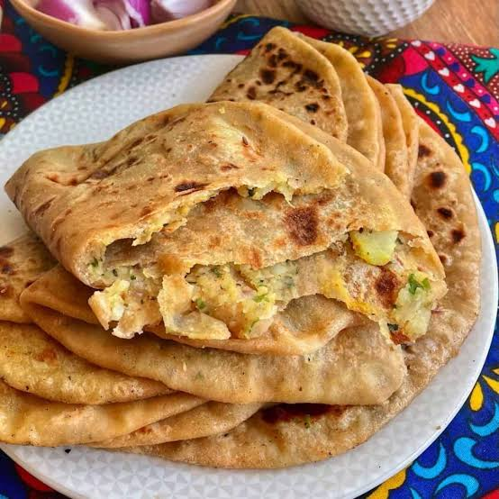

Aloo Ka Paratha!

Description
This is a simple Aloo Paratha recipe.
Aloo ka Paratha is the GOAT. You cannot convince me otherwise.
As a aloo paratha enthusiast, I can say that this is also one of the best dishes to have on a special occasion like breakfast lol. The aroma of the spices and the taste of the potatoes is just heavenly. This recipe is simple and easy to follow, so you can make it at home without any hassle. Gotta love it!!
Back to Home
Ingredients
- 2 cups whole wheat flour (atta)
- Salt to taste
- 2 tbsp oil, plus extra for kneading and roasting
- Water, as needed for kneading
- 3 medium potatoes, boiled and mashed
- 1 tsp ginger, grated or paste
- 2 green chilies, finely chopped
- 1 tsp cumin seeds
- 1 tsp red chili powder
- ½ tsp coriander powder
- ¼ tsp garam masala
- ½ tsp amchur (dry mango powder)
- 2 tbsp coriander leaves, finely chopped
- Extra flour, for dusting
Steps
- In a large bowl, mix the whole wheat flour and salt. Add water gradually and knead into a soft, smooth dough. Add a little oil, knead again, cover, and let it rest for 20 minutes.
- While the dough rests, mash the boiled potatoes well in a separate bowl.
- Add the ginger, green chilies, cumin seeds, red chili powder, coriander powder, garam masala, amchur, coriander leaves, and salt to the mashed potatoes. Mix well to combine.
- Divide the dough into equal-sized balls. Roll each ball out into a small disc, about 5 inches in diameter.
- Place a portion of the potato stuffing in the center of the disc. Bring the edges together to seal the stuffing inside, then flatten gently.
- Dust with flour and carefully roll out the stuffed dough into a larger paratha, about 7 inches across, being careful not to let the filling spill out.
- Heat a tawa or griddle over medium-high heat. Place the paratha on it and cook until golden-brown spots appear on the bottom.
- Flip and brush oil or ghee on the cooked side. Flip again and brush oil on the other side, pressing gently, until both sides are golden and cooked through.
- Serve hot with yogurt, pickle, or chutney.